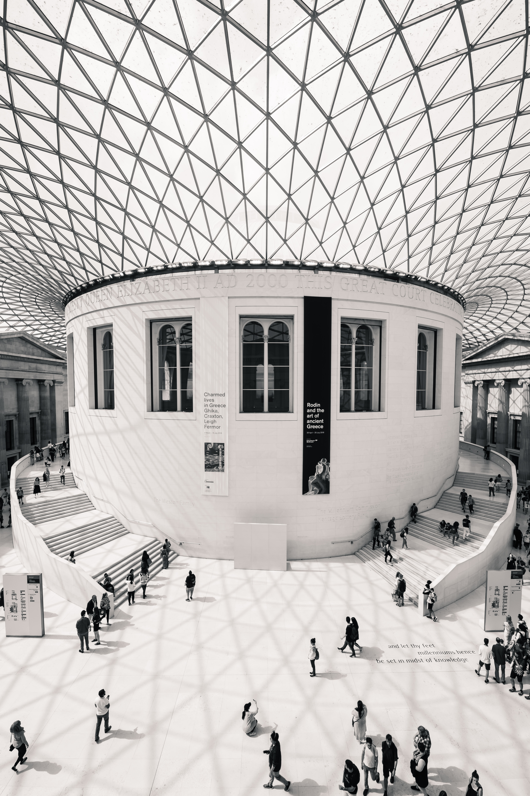
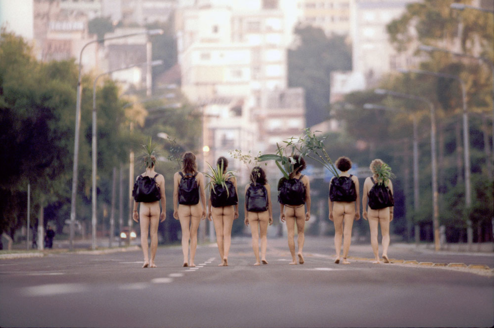

Le musée THAY THAY est un musée national inauguré en 1986, situé dans le 7ᵉ arrondissement de Paris le long de la rive gauche de la Seine. Il est installé dans l’ancienne gare d'Orsay, construite par Victor Laloux de 1898 à 1900 et réaménagée en musée sur décision du Président de la République Valéry Giscard d'Estaing
Notre photographe du moment

"It's not about where your starting point is, but your end goal and the journey that will get you there." by LeGrosse